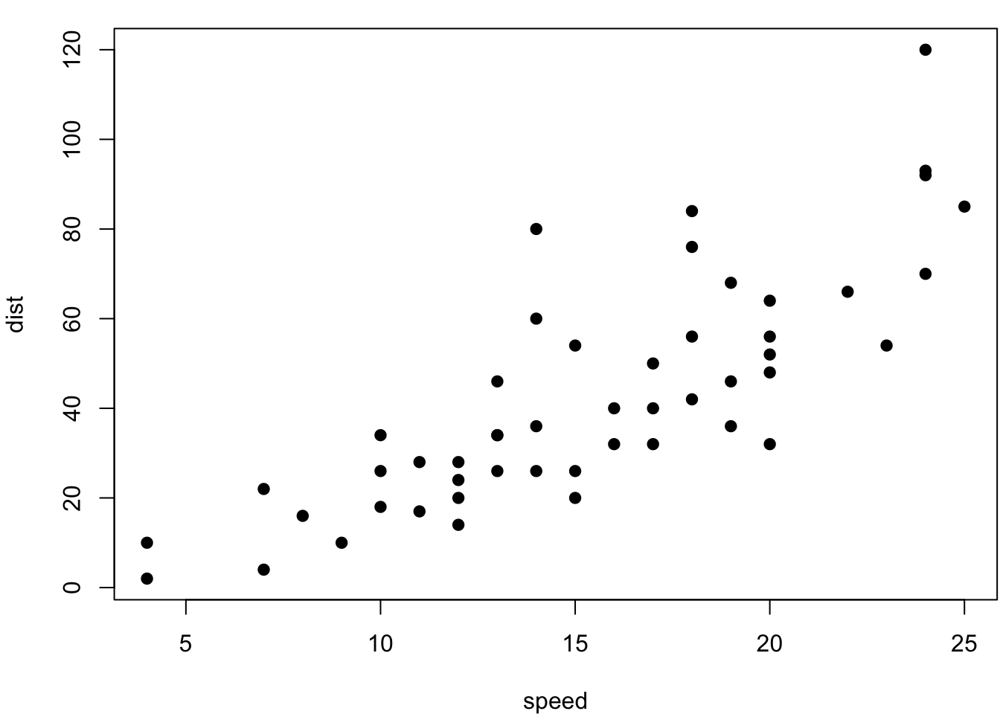

第 1 章 牛刀小试
现在我们可以试试 bookdown 的一些初级功能了，例如图表。图 1.1 是一幅无趣的散点图，表 1.2 是一份枯燥的数据。
## mpg cyl disp hp drat wt qsec
## Mazda RX4 21.0 6 160 110 3.90 2.620 16.46
## Mazda RX4 Wag 21.0 6 160 110 3.90 2.875 17.02
## Datsun 710 22.8 4 108 93 3.85 2.320 18.61
## Hornet 4 Drive 21.4 6 258 110 3.08 3.215 19.44
## Hornet Sportabout 18.7 8 360 175 3.15 3.440 17.02
## vs am gear carb
## Mazda RX4 0 1 4 4
## Mazda RX4 Wag 0 1 4 4
## Datsun 710 1 1 4 1
## Hornet 4 Drive 1 0 3 1
## Hornet Sportabout 0 0 3 2## mpg cyl disp hp drat wt qsec vs am \
## Mazda RX4 21.0 6.0 160.0 110.0 3.90 2.620 16.46 0.0 1.0
## Mazda RX4 Wag 21.0 6.0 160.0 110.0 3.90 2.875 17.02 0.0 1.0
## Datsun 710 22.8 4.0 108.0 93.0 3.85 2.320 18.61 1.0 1.0
## Hornet 4 Drive 21.4 6.0 258.0 110.0 3.08 3.215 19.44 1.0 0.0
## Hornet Sportabout 18.7 8.0 360.0 175.0 3.15 3.440 17.02 0.0 0.0
##
## gear carb
## Mazda RX4 4.0 4.0
## Mazda RX4 Wag 4.0 4.0
## Datsun 710 4.0 1.0
## Hornet 4 Drive 3.0 1.0
## Hornet Sportabout 3.0 2.0| rownames | mpg | cyl | disp | hp | drat | wt | qsec | vs | am | gear | carb |
|---|---|---|---|---|---|---|---|---|---|---|---|
| Mazda RX4 | 21.0 | 6 | 160 | 110 | 3.90 | 2.620 | 16.46 | 0 | 1 | 4 | 4 |
| Mazda RX4 Wag | 21.0 | 6 | 160 | 110 | 3.90 | 2.875 | 17.02 | 0 | 1 | 4 | 4 |
| Datsun 710 | 22.8 | 4 | 108 | 93 | 3.85 | 2.320 | 18.61 | 1 | 1 | 4 | 1 |
| Hornet 4 Drive | 21.4 | 6 | 258 | 110 | 3.08 | 3.215 | 19.44 | 1 | 0 | 3 | 1 |
| Hornet Sportabout | 18.7 | 8 | 360 | 175 | 3.15 | 3.440 | 17.02 | 0 | 0 | 3 | 2 |

图 1.1: 雷猴啊，散点图！
| Sepal.Length | Sepal.Width | Petal.Length | Petal.Width | Species |
|---|---|---|---|---|
| 5.1 | 3.5 | 1.4 | 0.2 | setosa |
| 4.9 | 3.0 | 1.4 | 0.2 | setosa |
| 4.7 | 3.2 | 1.3 | 0.2 | setosa |
| 4.6 | 3.1 | 1.5 | 0.2 | setosa |
| 5.0 | 3.6 | 1.4 | 0.2 | setosa |
| 5.4 | 3.9 | 1.7 | 0.4 | setosa |
就这样，你可以一直编下去，直到编不下去。